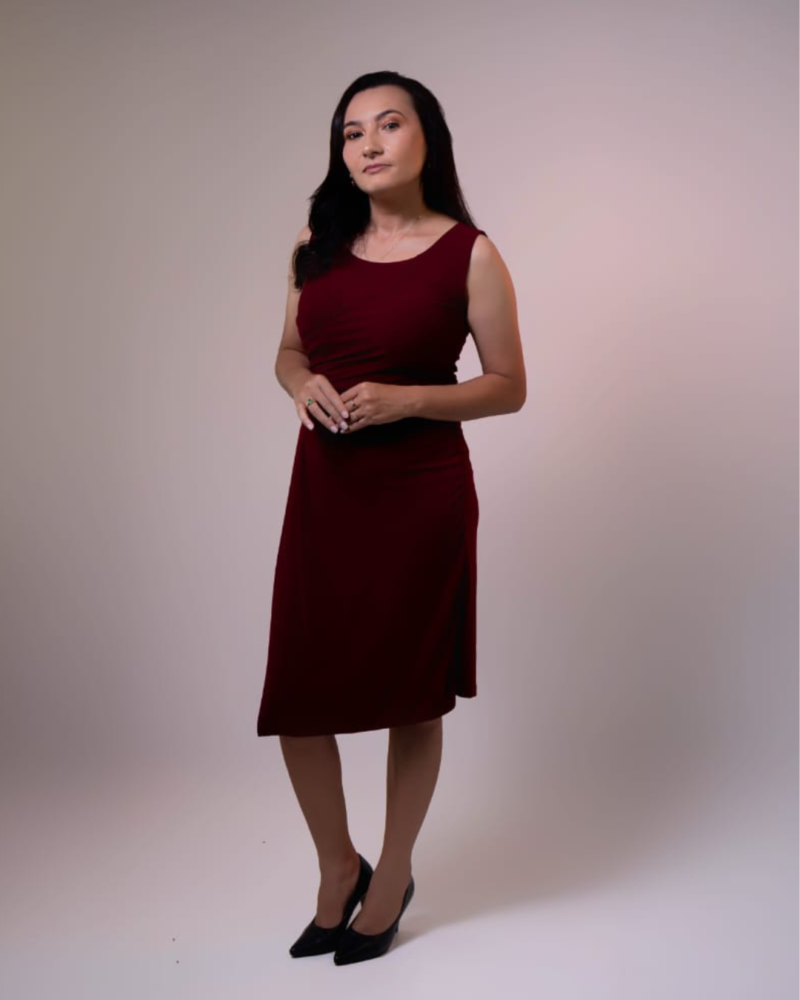

Profissional com formação em Serviço Social e especialização em Gestão de Projetos Sociais e Políticas Públicas. Atendimento humanizado com responsabilidade, empatia e compromisso social.

36 anos · São João do Rio do Peixe — PB
Assistente Social com formação pela Faculdade Santa Maria e especialização em Gestão de Projetos Sociais e Políticas Públicas pela Unicorp Faculdades. Atua com comprometimento na promoção de inclusão, igualdade e desenvolvimento comunitário.
Com experiência em atendimento social, coordenação acadêmica, orientação familiar e atuação como Conselheira Tutelar Suplente, Jaciandra construiu uma trajetória marcada pela escuta ativa, pela ética profissional e pelo cuidado genuíno com cada pessoa atendida.
Atualmente pós-graduanda em Docência do Ensino Superior, amplia sua atuação para a formação de professores, coordenadores e gestores educacionais, levando o olhar social para dentro das escolas e comunidades.
Atendimento especializado em diversas frentes do serviço social, sempre com foco no ser humano e em soluções reais para cada situação.
Informação e suporte sobre direitos sociais, acesso a serviços públicos e políticas de proteção social.
Suporte especializado para famílias em situações de conflito, vulnerabilidade ou necessidade de reorganização.
Articulação com a rede socioassistencial, saúde, educação e demais políticas públicas para encaminhamentos assertivos.
Orientação e auxílio no acesso ao BPC, Bolsa Família, LOAS e demais programas de proteção social.
Espaço seguro de escuta qualificada e acompanhamento contínuo para superação de situações difíceis.
Oficinas, palestras e formação com gestores, coordenadores e professores da rede municipal de ensino.
Cada pessoa é tratada com dignidade, respeito e cuidado genuíno.
Atenção plena e presença real em cada conversa e atendimento.
Sigilo, responsabilidade e conduta ética em todos os atendimentos.
Dedicação ao bem-estar coletivo e à transformação social positiva.
Especialização em planejamento e execução de projetos e políticas públicas.
Receba orientação, acolhimento e apoio com um atendimento profissional e humano. Estou em São João do Rio do Peixe-PB e atendo também de forma remota.
Acompanhe conteúdos sobre direitos sociais, orientação familiar, dicas sobre benefícios e muito mais. Estou sempre compartilhando informações que podem fazer a diferença na sua vida.
Me siga nas redes para ficar por dentro de novidades, lives e conteúdos exclusivos sobre assistência social e políticas públicas.